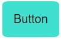

Is Bootstrap Better?
06 Oct 2022What is Bootstrap?
Do you ever get tired of writing long CSS codes? Do you struggle with designing your websites and don’t know how to make it look good and clean? If these apply to you, using Bootstrap 5 might make your life easier. Bootstrap 5 provides HTML and CSS based design templates that include built in navigation bars, buttons, tables, margin / padding layouts, and many more! It gives you the ability to create responsive web designs easily. If you want to create a menu bar that has a dropdown of different contents, Bootstrap 5 has a class that you can implement, so you don’t have to create the HTML and CSS on your own. If you want to have a button that is blue and hover interactive, there are already classes in Bootstrap 5 with different button colors. All you have to do is just include the class to your div. A lot of contents that you may want to include in your website is already built in on Bootstrap 5, so you’ll take less time doing all the HTML and CSS. Bootstrap 5 still takes the same amount of time to learn as learning HTML and CSS, but it is worth it in the end, and it will save you a lot of time.
Let’s compare using HTML and CSS with using Bootstrap 5.
Here are examples of making a teal button using raw HTML and CSS:

HTML:
<button>Button</button>
CSS:
button{
padding:1%;
background-color: turquoise;
border-style: none;
border-radius: 10%;
font-size: 20px;
}
And here is an example of making a teal button using Bootstrap 5:

HTML:
<button type="button" class="btn btn-info">Button</button>
No CSS
We can see from the code that using Bootstrap 5 takes up less amount of coding line. It was also much easier to accomplish, and it took less time!
Drawbacks
Bootstrap 5 is great but there are drawbacks to using it. First, you are limited to designs using Bootstrap 5. While using bootstrap, your website may be really similar to another website who also coded using bootstrap. Second, I feel that coding in Bootstrap is more HTML heavy, and it is hard to code fancy designs that you may want to include. If you prefer coding in CSS, Bootstrap may not be for you.
What I feel
Using bootstrap was a bit challenging for me since I had to learn all the classes that were available. I also felt a bit frustrated because it was hard for me to change the font sizes, and the classes sometimes would not respond or it wouldn’t work. For example, when I wanted the list of words to be on the right side of the screen, all the classes that I used would not make it go to the right side. So, I ended up fixing it using CSS. I think Bootstrap is definitely not for me, I would still use a few classes here and there, but I still prefer coding in raw HTML and CSS. This also gives me the freedom to place any item I want anywhere on the screen because there would be no grid layout, and I would not have to be using the default bootstrap designs. This might be the case for now, but maybe once I learn more about Bootstrap, I might start to like it.